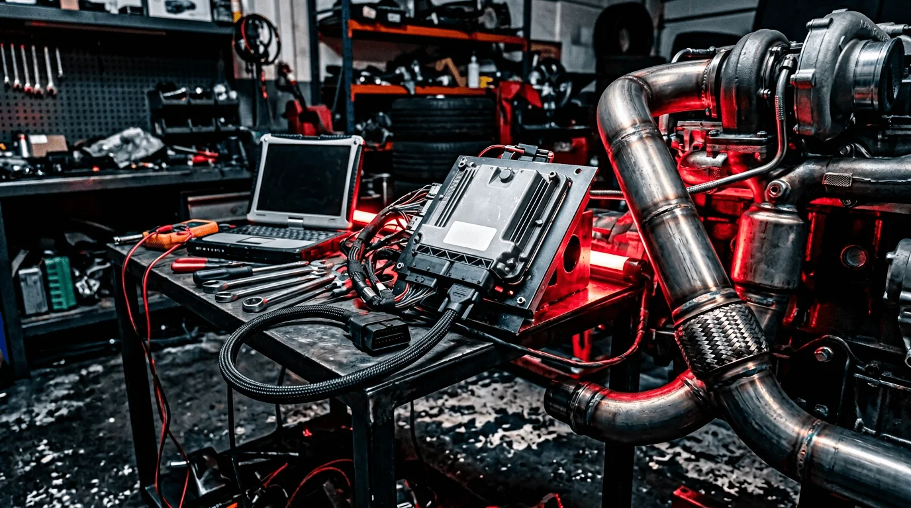

Le catalyseur (pot catalytique) réduit les émissions de CO, HC et NOx en sortie d’échappement. Il peut se colmater, se fondre ou provoquer des contre-pressions nuisibles aux performances. La suppression catalyseur (décata) chez AUTOTECH combine une reprogrammation qui retire ou adapte les stratégies liées aux sondes lambda (pour éviter les voyants) et, selon le véhicule, la dépose du catalyseur remplacé par un tube de décata.
Nous intervenons sur diesel et essence, avec des outils professionnels et des cartographies éprouvées. Gain de débit, meilleur son et fiabilité.
